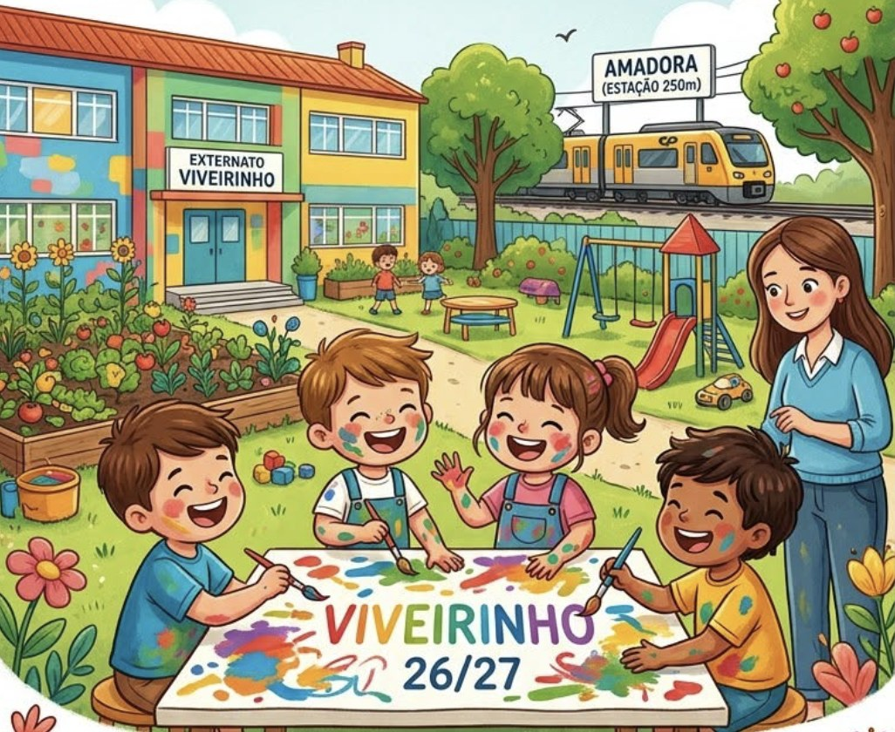
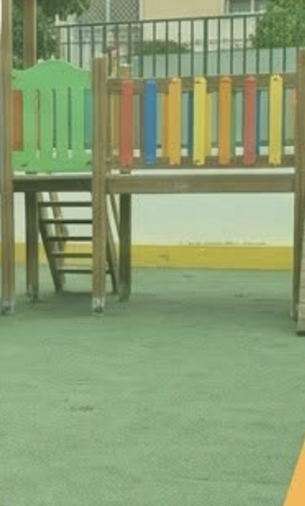

Inscrições abertas · ano letivo 2026/27
Externato
Educação pré-escolar na Amadora, a 250 metros da estação. Cuidamos hoje, preparamos amanhã.
- Ano letivo 2026/27
- Das 7h30 às 19h00
- Estação de Amadora a 250 m
Um viveiro de gente pequena.
Sítio pequeno onde o que está a começar é cuidado, com luz, tempo e carinho, até estar pronto para crescer.
Num viveiro, ninguém pede à semente que cresça depressa. Pede-se que cresça bem, com raízes. É assim o Externato Viveirinho: um sítio cuidado, onde as crianças começam, e onde as famílias sabem que ficam bem entregues.
- Desde 1955a formar crianças felizes
- 4,7 / 5 no Google, segundo o Externato
- Rede públicaeducação pré-escolar
Estabelecimento de educação pré-escolar integrante da rede pública, financiado pelo Ministério da Educação, Ciência e Inovação ao abrigo dos contratos de associação ao pré-escolar. a validar com o cliente
Um dia no Viveirinho, sem pressa.
Acompanhe o sol, da chegada ao “até amanhã”. Faça scroll devagar: o dia corre com ele.
Chegada sem pressa
Um bom dia, um abraço, e o dia começa com calma. Quem chega cedo é recebido, não despachado.
exemplo ilustrativoManhã de descobertas
Pintar, construir, ouvir histórias, cantar. As aprendizagens chegam a brincar, com carinho e diversão.
exemplo ilustrativoÀ mesa e a descansar
Uma pausa para comer e recuperar energias, ao ritmo de cada criança.
exemplo ilustrativoLá fora
Relva, parque e horta. Espaço amplo para correr, trepar e regar o que se plantou.
exemplo ilustrativoAté amanhã
O dia fecha às 19h00. Para as famílias de dias compridos, saber que ficou tudo bem entregue.
exemplo ilustrativo
Rotina de exemplo, ilustrativa: atividades, refeições e horas concretas a confirmar com o Externato.
O que cultivamos todos os dias.
-
Equipa dedicada e qualificada
Quem cuida sabe o que faz, e gosta de o fazer. É assim que uma criança se sente em casa.
-
Aprendizagens com carinho e diversão
Aprende-se melhor a rir. Brincar é a maneira mais séria de descobrir o mundo.
-
Espaço exterior amplo e atividades enriquecedoras
Relva, parque, horta. Espaço para correr, trepar e ver crescer o que se plantou.
-
Ambiente seguro e acolhedor
Um sítio onde se pode errar, chorar e recomeçar, com colo sempre à distância de um passo.
-
Um horário a pensar nas famílias
Aberto das 7h30 às 19h00, para os dias longos de quem trabalha.
Passeie pelo Viveirinho.
Toque nos pontos da ilustração do Externato para ver o que há em cada canto.

1 de 5
A casa
Um edifício a cores, feito à medida de quem chega pequenino.

Ilustração e fotografia retiradas de publicações do próprio Externato. As legendas são ilustrativas.
Venha ver o viveiro por dentro.
Ligue, escreva ou passe por cá. Marque uma visita e conheça o espaço, a equipa e o dia a dia.
- Telemóvel963 534 652
- Emailviveirinho@sapo.pt
- Horário7h30 – 19h00
- Moradaa confirmar com o cliente